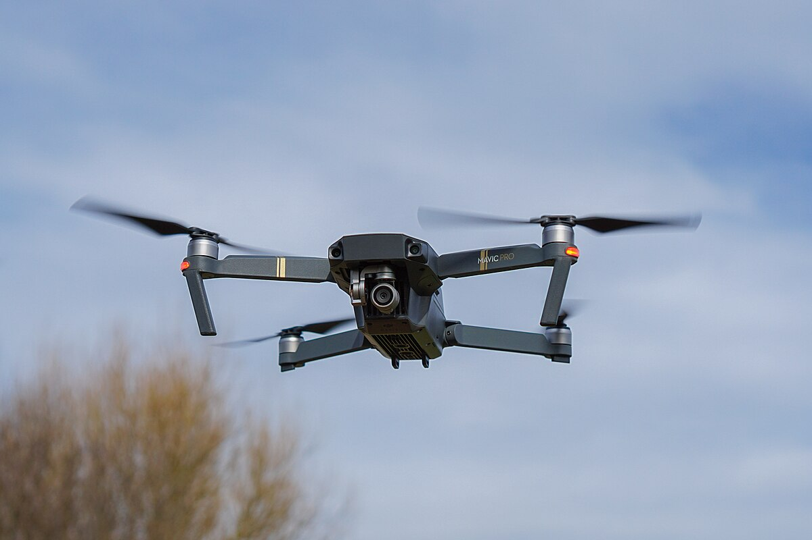
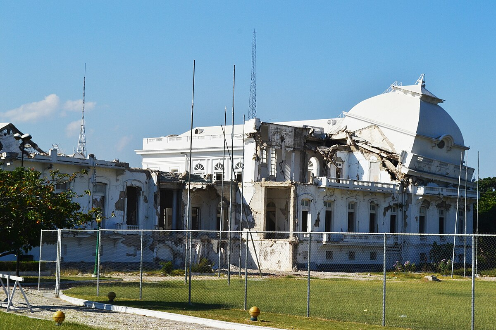
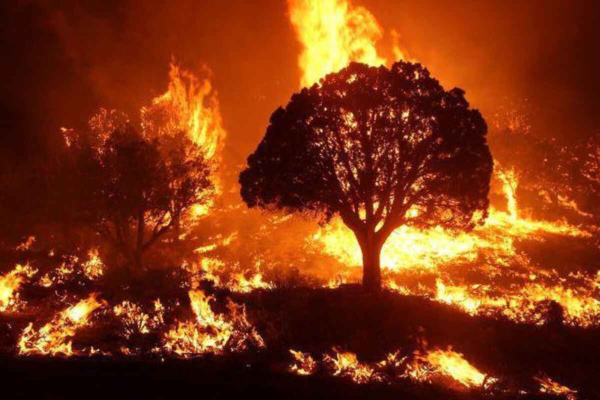

StratoRelief
1. INTRODUCTION
AI-Powered Drones. Faster Relief. Safer Response.
We combine edge AI, computer vision, and autonomous flight to cut response times and save lives.
<5min deploy 98% detection accuracy Secure-by-design

Photo: Wikimedia Commons • Sources: UN OCHA , EM‑DAT
2. PROBLEM → SOLUTION
From chaos to clarity
Disaster pain points
Blocked roads delay teams
Low visibility at night
Manual mapping is slow
Fragmented communication
Bandwidth constraints in the field
Limited, noisy ground truth
Hazard evolves faster than reports
Field logistics often dominate timelines. Faster situational awareness reduces wasted routing and duplicate tasking.
StratoRelief solutions
Rapid aerial deploy in minutes
Thermal + low-light vision
Automated damage mapping
Secure command dashboard
Edge-first inference with sync
Swarm coverage and deconfliction
Standard GIS outputs (GeoTIFF, GeoJSON)
Assumptions: trained pilots on-site, VLOS/BVLOS per local regs, safety perimeter enforced.
Ref: IFRC OERP , UN OCHA
3. AI CAPABILITIES
AI capabilities
Real-time Damage Mapping
Auto-stitches aerial mosaics (orthorectified)
Change detection over pre-event baselines
Outputs: GeoTIFF, MBTiles, vector footprints
Limitations: cloud cover, smoke, and specular water can reduce accuracy.
Thermal Search & Rescue
Human/animal heat signatures (LWIR)
Night navigation with low-light sensors
Prioritized geotagged detections
Caveat: thermal false positives from vents, vehicles. Cross-check with RGB.
Swarm Coordination
Multi-drone coverage
Collision-aware path planning
Dynamic area partitioning (Voronoi)
Bandwidth-aware control; failsafe to RTL on link loss.
Edge AI Onboard Inference
Low latency detection
Works offline
Optimized models
Quantized backbones (INT8) and tiled inference keep latency <150ms per frame.
Hazard & Gas Detection
Multi-sensor fusion
Threshold alerts
Incident tagging
Common payloads: electrochemical, PID, and PM sensors with GPS/time sync.
Autonomous Medical Delivery
Critical payload drops
Route + ETA tracking
Secure parcels
Observe drop zone marking and crowd separation. Comply with local BVLOS waivers.
Refs: NIST UAS Roadmap , Edge AI research
4. HOW IT WORKS
How it works
1 Deploy2 Scan & Detect3 Analyze (Edge + Cloud)4 Coordinate Response
StratoRelief Architecture
Drone sensors connect to edge AI, uplink securely to command center dashboard, and coordinate relief teams.
Drone
(Sensors)
Edge AI
Secure Uplink
Command Center
Dashboard
→ Relief Teams
Latency budgets
Frame acquisition: 16–33ms (30–60 FPS)
Edge inference: 80–150ms (INT8 CNN)
Geotag + buffer: 10–20ms
Uplink (if available): 50–150ms
Security controls
TLS uplink, forward secrecy
RBAC on dashboard + audit logs
Signed model/payload updates
At-rest encryption on edge storage
Method: Risk R = Hazard × Exposure × Vulnerability. Outputs publish to GIS for cross-agency coordination.
Refs: UNDRR GAR , NIST Edge
5. SCENARIOS
Use cases
Earthquakes
Floods
Wildfires
Cyclones

Assess collapsed structures (footprint extraction)
Thermal scan for survivors (priority areas)
Deliver first-aid kits to cleared zones
Output: building damage index, blocked road layers
Map inundated areas (water segmentation)
Drop life vests / comms beacons
Monitor levee integrity from air
Output: flood extent, isolated clusters

Thermal edge hotspot mapping
Wind-aware patrol routes
Asset protection and spot fire watch
Output: hotspot grid, safe approach corridors
Damage and debris mapping post‑landfall
Temporary cell relay (mesh or tethered)
Water/food drop to cut‑off areas
Output: debris layers, accessibility ranking
Photos: Wikimedia Commons • Refs: FEMA , NOAA , NASA FIRMS
6. IMPACT
Measured impact
EM‑DAT disasters (1900–present)
0
Billion‑$ US events (2023)
0
Avg. drone flight (min)
0
Edge inference latency (ms)
0
Refs: EM‑DAT , NOAA NCEI
7. BEFORE / AFTER
Before / After
Left: Pre‑event satellite view
Right: Post‑event flooding
Photos: Wikimedia Commons (illustrative pairing)
8. NOTES & FAQ
FAQ
Is StratoRelief deployed today?
This is a mock educational demo site. It shows how AI drones could support disaster response in the near term.
How do you handle data privacy?
Edge-first design keeps sensitive processing on the drone. Uplinks use encryption and role-based access.
Can it work offline?
Yes. Onboard inference supports detection and mapping without a network. Sync resumes when a link is available.
What datasets are used for model training?
We reference open aerial and satellite datasets for academic prototyping: SpaceNet (building footprints), xBD (pre/post-disaster), Copernicus EMS, and NASA FIRMS. For thermal patterns, synthetic augmentation and controlled field captures are used.
Note: This presentation does not redistribute any dataset; it only cites sources for study.
What are the evaluation metrics?
Damage segmentation: mIoU, F1 at building-level
Thermal detection: precision/recall, P95 latency
Change detection: pixel F1 and footprint accuracy
Operational KPIs: deploy time, coverage per hour
Key limitations and failure modes?
Thermal FP/FN due to heat sources or occlusions
Smoke, rain, and glare degrading RGB mapping
GNSS multipath impacting georegistration
Bandwidth constraints limiting live uplink
Mitigations: sensor fusion, redundancy, conservative alerting, human-in-the-loop triage.
Safety, ethics, and governance?
People-first: do no harm; protect privacy
Transparent model behavior and audit logs
Local community consent where applicable
Incident reviews and continuous improvement
Regulatory considerations?
Operations must follow national UAS rules (e.g., FAA Part 107 in the US) and mission-specific waivers for BVLOS or night operations. Remote ID, airspace coordination, and geofencing are required where applicable.
Deployment checklist?
Airspace brief and NOTAM review
Battery/prop/firmware checks
Sensor calibration and storage health
Safety perimeter and crowd control
Data handoff and GIS export validation
Glossary
BVLOS : Beyond Visual Line of SightRBAC : Role-Based Access ControlmIoU : Mean Intersection-over-UnionOrthorectification : geometrically correcting imagery using elevation
Selected references
These sources are cited for academic context only.
Future directions
Onboard foundation models for zero-shot detection
Adaptive swarms with decentralized mapping
Integrated satellite + aerial fusion pipelines
Open datasets for thermal SAR benchmarking
General refs: UNDRR , UN OCHA , EM‑DAT